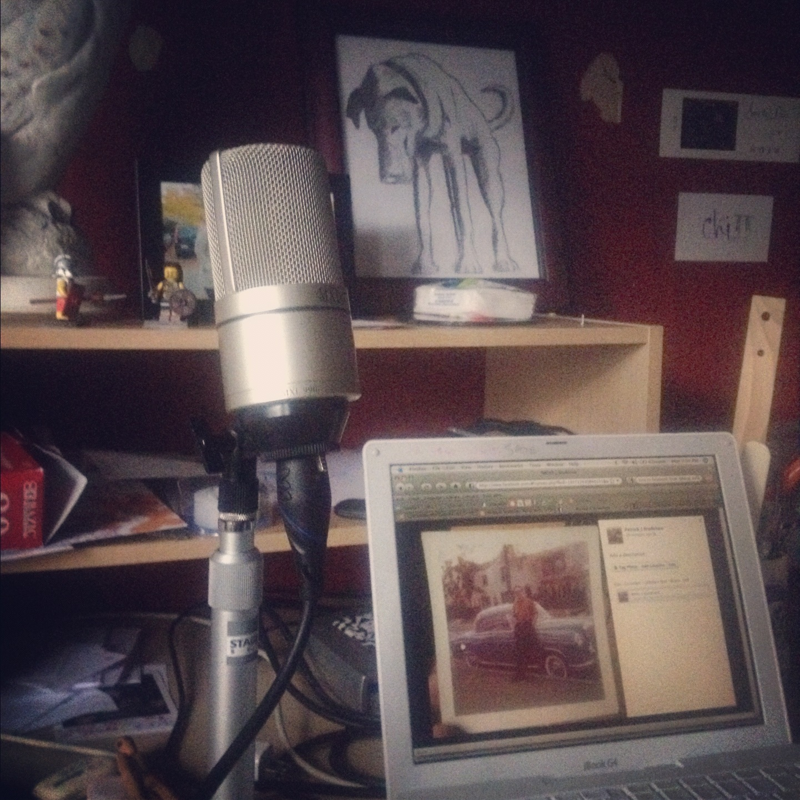
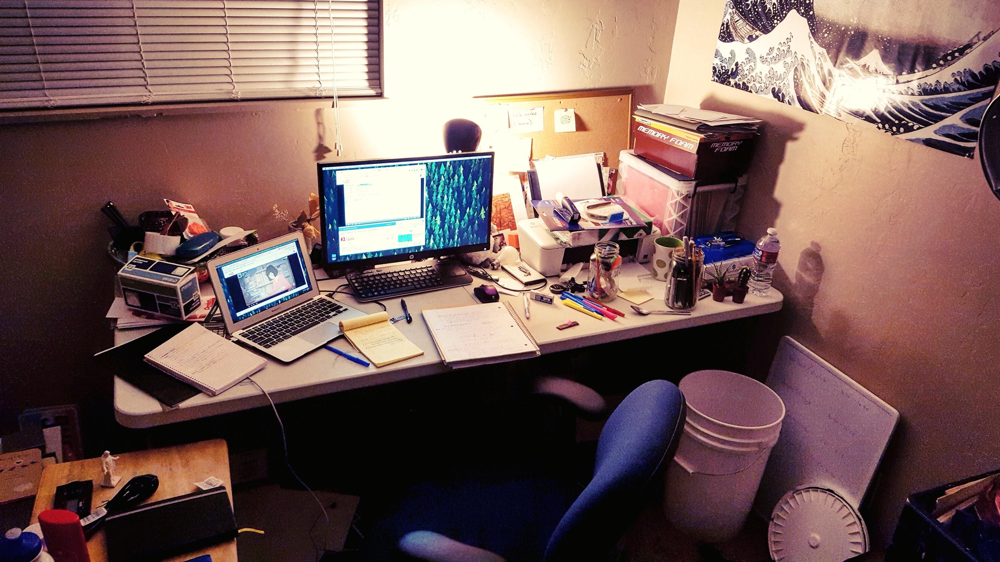

Hi, I'm Patrick! I was born in the Philippines and spent my childhood
in Metro Manila. Later in life I spent a lot of time on a small island
in the Puget Sound, close to Seattle, WA. I moved to Utah in 2015 and
met my sweet, wonderful, beautiful wifeimmediately upon arrival. Now we pay our bills together
and have a cat. Here's a video:
my wife Railee and I singing a Cash/Carter tune when we were just
dating
Some fun facts about myself:
I swam with whales in Subic Bay in the Philippines.
Currently I am a computer science student
at Salt Lake Community College! My
favorite computer related memory has to be when my dad let me play
"Lemmings" on his old laptop in the 90's. We also used to have problems
with our mouse a lot when I was a kid and I remember learning how to
navigate using keyboard shortcuts and MS DOS. Does that show my age?
When I had windows 95 I was really interested in customizing the look
of it and would find hacks on the internet for changing the start button,
for example. And then when I was trying to make it as a musician, I
learned how to use Apple computers. Computers are neato TO THE
MAX!!!

In 2010, I mainly
used a 7 year old iBook G4 to record music.

Now I use a MacBook
Air and extend it onto an HP monitor. Less music, more
school work.
{kind=link}
{kind=link}
{kind=link}
{kind=link}
{kind=link}
{kind=link}
{kind=link}
{kind=link}